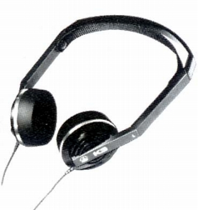
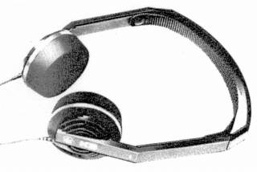

K3
 


■価格 19,800円■型式 ダイナミック型■振動板 ■インピーダンス 200Ω■再生周波数帯域 20-20,000Hz■許容入力 200mW■感度 92dB/1mW■コード 1.4m ステレオミニプラグ■重量 70g（コード含まず）■発売 1983年10月■販売終了 1984〜85年頃■備考 歪み率 1%マルチダイヤフラム方式、ヘッドバンド自動調整機構採用
AKGのインデックスへ